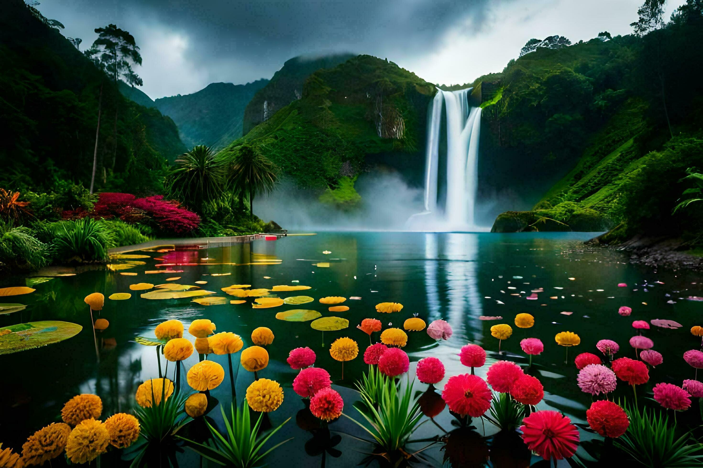
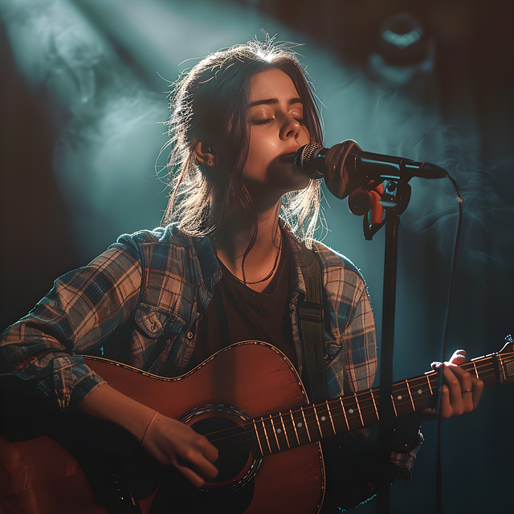

Hello! My name is Oyeniyi Adenike Adetutu. I am passionate about learning new things and exploring different hobbies.
In class, I have learned how to create a simple webpage using HTML. I have practiced adding headings, paragraphs, and images.
I am a web development enthusiast. I enjoy creating web pages and learning about new technologies.
I love reading books. My favorite genre is mystery.

Dancing is a great way to express myself and stay fit. I enjoy learning new dance styles.
Coding allows me to create amazing projects and solve complex problems. It's a skill I constantly work on improving.

Singing is one of my favorite ways to relax and enjoy music. I love singing different genres.
Cooking is a creative outlet for me. I enjoy experimenting with new recipes and flavors.

Learning ASL (American Sign Language) has been an enriching experience. It allows me to communicate in a unique way.